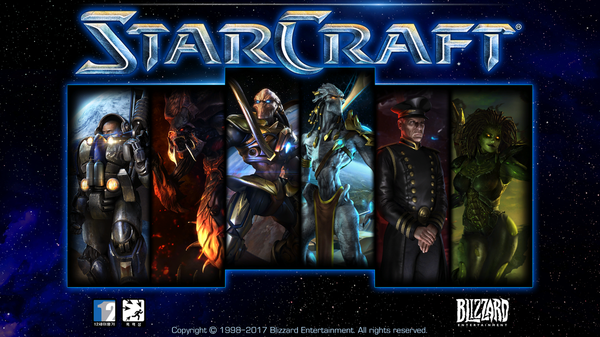

스타크래프트 리마스터 특징
01. 전략 시뮬레이션의 황제!
스타크래프트® 리마스터는 고전 명작 SF 전략 게임 스타크래프트를
완전히 업그레이드한 게임입니다. 스타크래프트 원본과 찬사를 받은
확장판 스타크래프트: 브루드 워가 여러분을 찾아갑니다.
유닛, 건물, 환경을 리마스터하고 음향을 보완했으며 지원하는 해상도도 늘어났습니다.
아르타니스, 피닉스, 태사다르, 레이너, 케리건 같은 영웅들의 고난과 극적인 승리의
순간을 더욱 생생하게 경험해보세요. 완벽한 밸런스를 자랑하는
스타크래프트의 전략적 게임플레이는 그대로입니다.
02. 돌아온 실시간 전략 게임
여덟 가지 독특한 환경에서 기계화된 테란, 사이오닉 전사 프로토스,
진화하는 외계 생명체 저그를 지휘해 적을 압도하십시오.
전쟁이 끊이지 않는 먼 미래 환경에서 기지를 건설하고 유닛을 실시간으로 지휘해야 합니다.
캠페인을 완료하고 온라인에서 개인전 또는 팀전을 통해 다른 플레이어와 실력을 겨룰 수 있습니다.
스타크래프트의 핵심 요소인 개성 넘치는 종족을 지휘해 미래의 전장을 지배하십시오.
스타크래프트 게임 샷